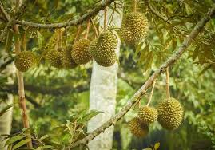

我最喜歡的水果(榴槤)
長在樹幹上的砲彈
當榴槤上市的時候，也就是典當紗籠的時候，人們不惜用自己的紗籠來換取榴槤
古老的傳說與愛情
關於榴槤有一個有趣的傳說，從前，有一位老國王，他非常鍾愛自己的皇后，然而落花有意，流水無情，皇后卻嫌他他又老又丑，因此國王很難過。有一天，老國王到山上去求一個有魔術的老頭子幫忙，
老頭指引他去找12桶牛奶和一朵花來，就能夠讓皇后愛上自己的！，
老國王果然按照老頭的吩咐很快搞到了12桶牛奶，但是萬事俱備只欠東風，他還差一朵花，該去哪裡找那朵花去呢？正在這時，一位仙子跟老國王說：「你要找的那朵花，在另外一位仙子的頭上，要找的話就跟我來！」老國王跟著仙子來到了森林裡，發現那朵花真的在另外一個仙子的頭上，國王趁著仙子睡著了，悄悄地摘下了那朵花。 第三天，老國王興奮地來到了老頭的地盤，老頭子就施魔法將12桶牛奶和那朵花及很珍貴的一滴水，放進了蛋里。他將蛋交給了老國王說：「把這個蛋種到你的園子裡，到時候你要記得邀請我參加你的聚會啊！」國王連聲答應：「好啊。」 回到皇宮後，老國王小心翼翼地種下了蛋。到了第二天，老國王一早醒來就發現門前的樹結滿了帶刺的果子。他高興地摘下一個送給皇后，皇后吃了一口，馬上就愛上了他。晚上，老國王邀請大家來品嘗，卻忘了邀請那位老頭子，老頭子很生氣，就用魔法將那些果子變得臭臭的。就成了我們現在吃的「榴槤」。

榴槤成長的特色
榴槤的獨特之處在於其濃重的氣味，以及碩大而布滿硬刺的球狀果實。成熟後的果實長度可達30公分，直徑達15公分；果皮因成熟程度而呈綠褐色到黃褐色；果肉呈淺黃色，因味道甜美而被廣泛食用。榴槤在東南亞有「水果之王」的美譽，現已人工引種栽培於泰國、越南、中國南部等熱帶地區。本種是一種巨型的熱帶常綠喬木，樹高可達45公尺。葉片長圓，頂端較尖，聚傘花序，花色淡黃，果實大小如足球，果皮堅實，密生三角形硬刺，果肉是由假種皮的肉包皮組成，肉色黃至白皆有，粘性多汁，酥軟味甜，吃起來有冰淇淋的口感，但因味道濃重異於其他水果，對榴槤果肉的接受程度因人而異。
資料來源: